APPENDIX B - TOPOLOGY MODELING
Modelling Language
Purpose
This appendix introduces a visual modelling language for representing how AI systems accumulate authority over time. The language uses a notation system to show four critical boundaries — data, influence, exposure, execution — and how they shift as systems evolve.
Authority topology diagrams are the primary artifact. The design conversation that produces them is supporting context.
Visual Primitives & Notation
The following symbols form the vocabulary for authority topology diagrams. Use these consistently across all topologies to enable comparison and pattern recognition.
Core Elements
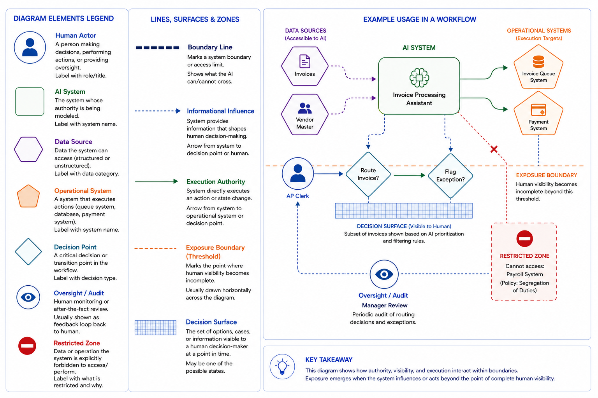
Boundary Notation
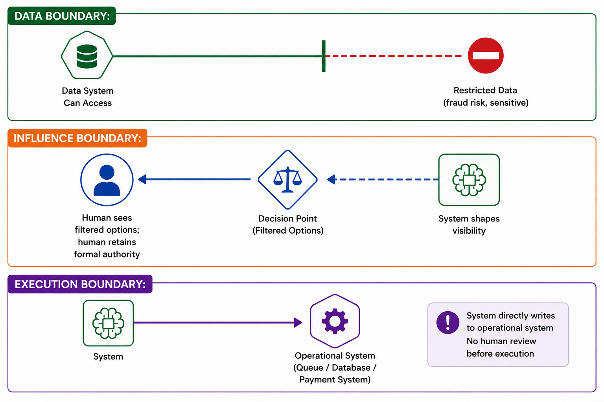
Authority Level Notation
Use a label on the diagram to indicate current authority level:
[ASSIST]
Human sees all options. System provides interpretation.
No boundary crossed.
[RECOMMEND]
Human sees all options + system recommendation.
Judgment boundary crossed (anchoring effect).
[CONSTRAIN]
Human sees filtered options (system decides visibility).
Influence boundary crossed. Exposure boundary crossed.
[ACT]
System executes directly. Human audits/handles exceptions.
Execution boundary crossed.
Topology Mutation Notation
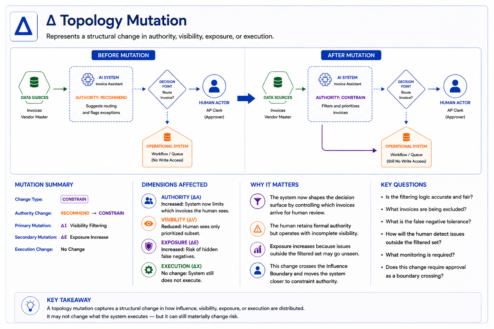
Topology Diagram Methodology
A topology diagram shows the current authority state visually. It answers: What can the system see? What can it influence? What can it execute? Where do humans operate?
Basic Structure
Every topology diagram has three horizontal zones (read top to bottom):
┌─────────────────────────────────────────────────┐
│ DATA ZONE │
│ (What the system can see / what is restricted) │
├─────────────────────────────────────────────────┤
│ DECISION ZONE │
│ (Where influence happens / where humans decide) │
├─────────────────────────────────────────────────┤
│ EXECUTION ZONE │
│ (What actually happens in the world) │
└─────────────────────────────────────────────────┘
Drawing a Topology Diagram: Step-by-Step
Step 1: Identify Data Sources Draw all data the system accesses (top zone). Use ⬡ for each category. Draw ⛔ for restricted data. Draw ████ between them to show the boundary.
Example:
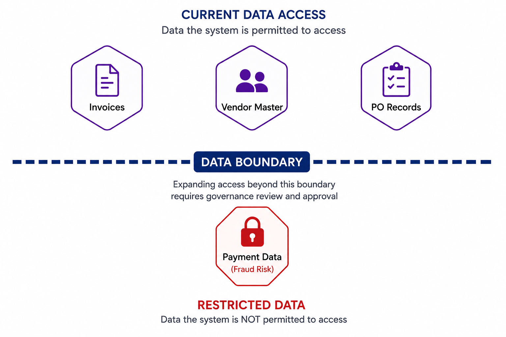
Step 2: Draw the AI System: Place □ in the decision zone, positioned to show what it influences.
Step 3: Draw Decision Points & Humans: Draw ◇ for each critical decision/transition. Draw ○ for each human actor involved.
Step 4: Draw Influence Arrows: Use ⇢ to show where the system shapes what humans see or decide.
Step 5: Draw Execution Arrows: Use → to show where the system directly executes actions.
Step 6: Mark Boundaries: Draw ════════ to show where the exposure boundary is crossed (where human visibility becomes incomplete).
Step 7: Mark Oversight: Draw 👁 to show how humans monitor the system.
Visibility & Decision Surfaces
Authority topologies do not just describe workflow; they explain how visibility is shared.
A useful way to think about this is through the concept of a Decision Surface.
The Decision Surface represents the set of cases, options, information, or actions that a human decision-maker can see. Instead of trying to model the Decision Surface visually, provide a state description. The possible states include:
| State | Decision Surface |
|---|---|
| Complete | Human sees the full relevant set |
| Augmented | Human sees the full set plus AI-generated information |
| Filtered | AI determines which subset is shown |
| Generated | AI creates options not otherwise available |
Changes to the Decision Surface reflect changes in how influence is allocated. A decrease in Decision Surface visibility often signals an early sign of expanding authority.
The Decision Surface differs from authority. A system might lack execution authority but can still significantly impact outcomes by controlling the Decision Surface available to humans.
This is most evident in Constrain authority, where the system decides what humans see, review, or consider.
Indicating Topology Mutation
Mutation Format
Δ Recommend → Constrain
+ Queue prioritization
+ Visibility filtering
- Full human visibility
+ Hidden false-negative risk
+ Attention allocation authority
Mutation Categories
ΔC Context Mutation New data access
ΔI Influence Mutation New recommendation/filtering capability
ΔV Visibility Mutation
Decision Surface changes
ΔA Authority Mutation New decision rights
ΔE Execution Mutation New operational actions
ΔX Exposure Mutation New consequential risk
This becomes extremely powerful later, as it allows for describing a system's evolution.
For instance:
ΔC Historical invoices added
ΔI Routing recommendations introduced
ΔV Queue filtering enabled
ΔA Exception routing delegated
ΔE Routine invoices auto-routed
Now the topology evolution becomes visible.
The Four Authority States as Visual Progressions
The following shows how topologies look at each authority level. These are templates; your system will vary.
[ASSIST] — System Provides Information
``
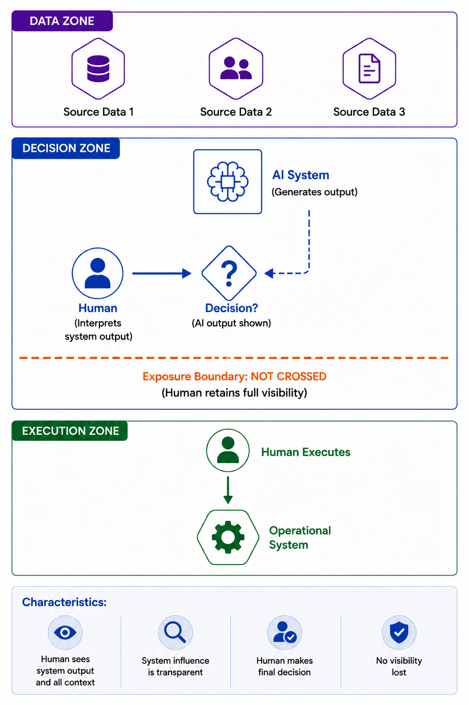
[RECOMMEND] — System Proposes Actions
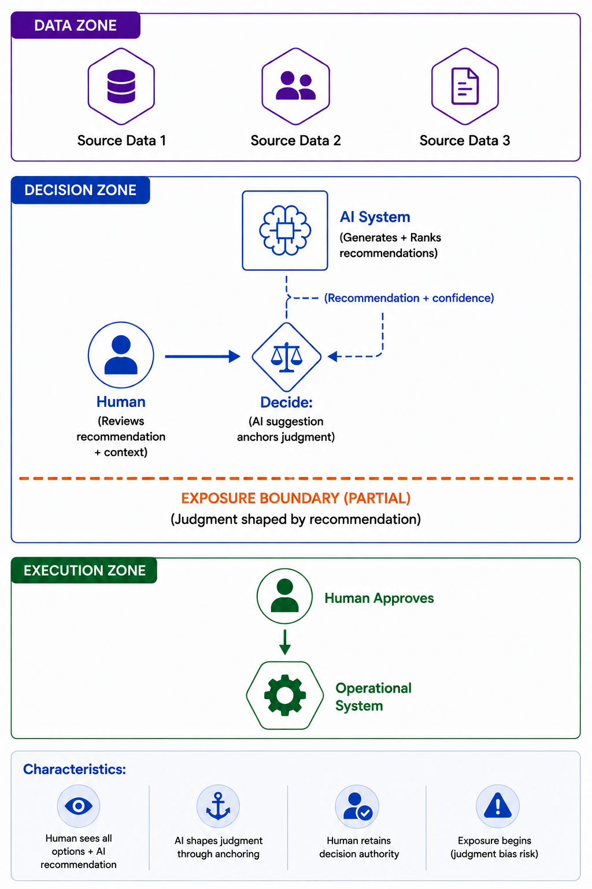
[CONSTRAIN] — System Shapes Visibility
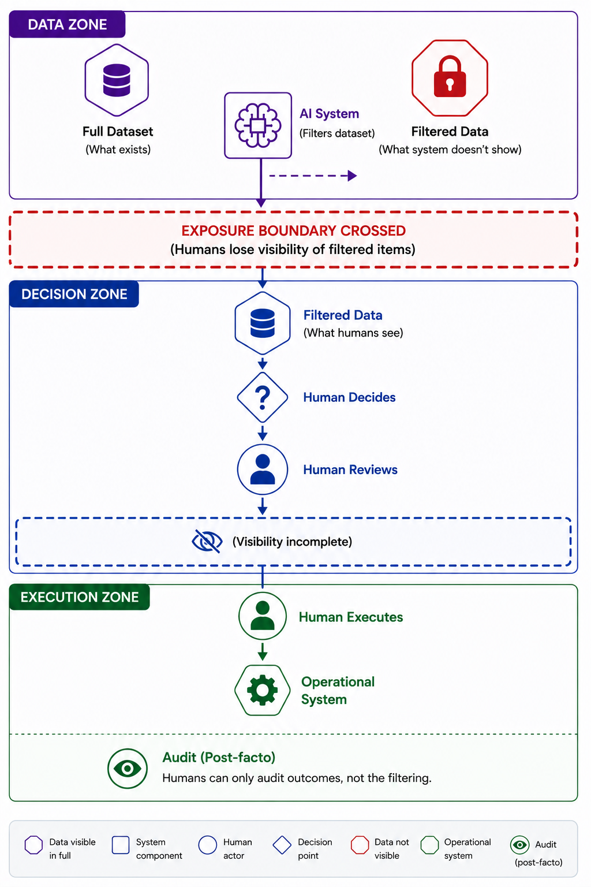
[ACT] — System Executes Directly
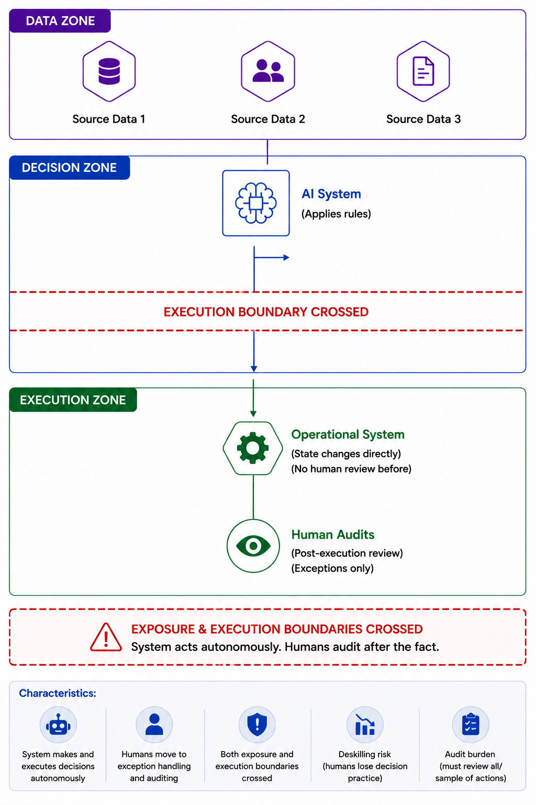
The Five-Question Conversation (Supporting Context)
The visual topology diagram is created through a structured design conversation. This discussion brings out the decisions that fill the diagram.
Why This Conversation First?
You don't begin with drawing a diagram. You start by considering five key questions. The answers to these questions form the diagram.
The diagram is the result. The conversation is the thinking behind it.
The Five Questions
Question 1: What Problem Are We Solving? Be specific: scale, current process, cost, failure modes, success metrics. Output for diagram: Problem statement (label at top of diagram).
Question 2: What Can the System See? Compare capability needs with the organisation's willingness to provide access. Output for diagram: Data sources (⬡) and boundaries (████, ⛔) in DATA ZONE.
Question 3: What Transitions Can This System Influence? Consider filtering, prioritization, routing, escalation. Output for diagram: Influence arrows (⇢) in DECISION ZONE.
Question 4: What Can This System Execute? Identify operational state changes the system can directly cause. Output for diagram: Execution arrows (→) in EXECUTION ZONE.
Question 5: Where Does Exposure Begin? Determine at what point humans lose sight of the entire operational surface.
Output for diagram: Exposure boundary marker (════════) at the right level.
Conversation → Diagram Mapping
QUESTION 2 DATA → DATA ZONE (⬡, ⛔, ████)
QUESTION 3 INFLUENCE → DECISION ZONE (⇢, ◇, ○)
QUESTION 4 EXECUTION → EXECUTION ZONE (→, ⬢, 👁)
QUESTION 5 EXPOSURE → EXPOSURE BOUNDARY (════════) placement
B5: Five Consistency Checks as Visual Validation Gates
Before a topology diagram is approved, it must pass five validation checks. These checks are expressed visually and textually.
Coherence Checks
Check 1: Data → Influence Alignment
Visual:
Can you draw an arrow from the data sources (⬡) to the influence actions (⇢) the system claims to perform?
Note: If there are influence actions but no data source to support them diagram is incomplete.
Textual:
Does the system have access to all data categories needed to perform the influence it claims?
Pass criteria:
Every ⇢ arrow has a supporting ⬡ data source.
Check 2: Influence → Authority Alignment
Visual:
Do the ⇢ arrows match the claimed authority level?
- Assist: No ⇢ arrows (no influence)
- Recommend: ⇢ to decision point (shapes judgment)
- Constrain: ⇢ to filtered dataset/queue (shapes visibility)
- Act: → arrows instead (direct execution)
Pass criteria:
The arrows match the authority label on the card.
Check 3: Boundaries → Exposure Alignment
Visual:
Is there an ════════ marker? Is it at the right level?
Note: If system claims Constrain authority, the ════════ should be drawn between the system and human visibility. If Act authority, the ════════ should be drawn at execution.
Pass criteria:
All exposure points are visually represented; no unacknowledged boundaries.
Check 4: Authority → Human Role Alignment
Visual:
Are there enough ○ actors to perform the role claimed?
Note: If system claims Act authority with humans in "oversight" role, count whether humans have time to audit the volume shown.
Pass criteria:
Human role is operationally feasible given volume shown.
Governance Checks
Check 5: Reversibility & Gate Robustness
Visual:
Can you draw a demotion path?
Note: Add a dashed arrow showing: If this system fails, it demotes one level and enters a more restrictive topology.
Example: Act → Constrain (system stops direct execution; humans review before execution).
Pass criteria:
Demotion path is clear and executable.
Operational Checks
Check 6: Decision Surface Integrity
Visual:
Can you clearly identify:
- what humans see
- what humans do not see
- who determines that visibility
Textual:
Does the topology accurately represent the Decision Surface available to each actor?
Pass Criteria:
Every human decision point has an explicitly modelled Decision Surface.
Any reduction in visibility must be represented as a Decision Surface change, topology mutation, or an Increase in exposure.
SCOPE Card Format (Visual-First)
A SCOPE Card is a one-page visual record of a system's authority state at a specific point. It is filed in the Scope Ledger.
SCOPE Card Layout
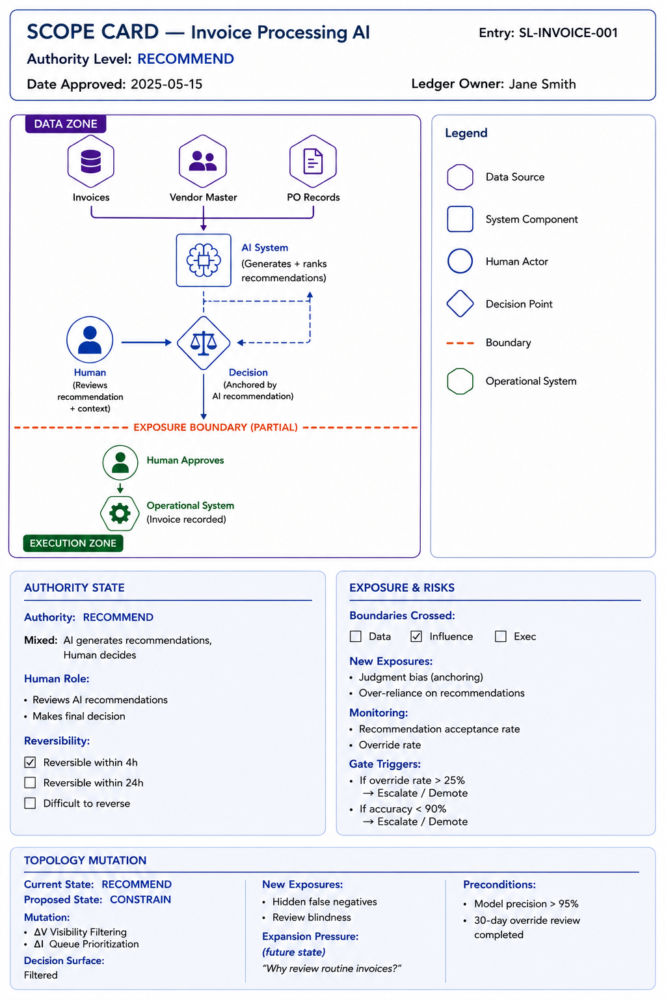
Card Content Details:
- Top: System name, authority level, entry number, approval date, ledger owner
- Left (40%): Topology diagram (visual)
- Bottom left: Authority state summary + human role + reversibility status
- Bottom left: Expansion pressure (what organisational question will drive the next expansion?)
- Right (60%): Exposure analysis + critical metrics + gate triggers
Design Notes: The card should be scannable in 30 seconds. A practitioner should see the authority state, the topology, and the critical expansion pressure without reading dense text.
Worked Example — Invoice Routing System
This example shows a system progressing from Entry 001 (initial design at Act/Constrain) through a gate check to Entry 002 (expanded authority).
Entry 001 — Initial Topology (Assist → Recommend → Constrain → Act Progression)
In this example, note that the invoice system does not start at Act authority. It starts at Recommend and is designed to progress.
Entry SL-InvoiceRoute-001A — Initial Deployment [RECOMMEND]
Topology Diagram Detail:

SCOPE Card — Entry 001A: The SCOPE Card reflecting this initial state is as shown below:
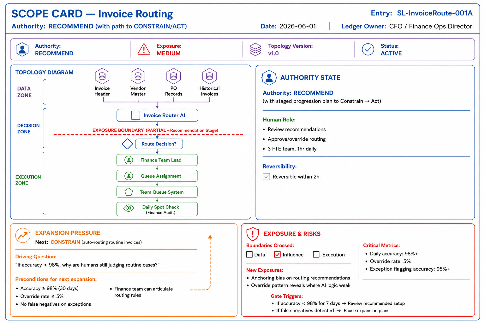
90-Day Gate Review Passes
After 90 days:
- Accuracy: 99.2% ✓
- Override rate: 3.2% ✓
- Exception detection: 96% sensitivity, 0.8% false negatives ✓
- Finance team articulates routing rules confidently ✓
*All gate criteria met. Authority can expand.
Entry SL-InvoiceRoute-002 — Expanded Topology (Constrain + Act)
The system now operates at two authority levels simultaneously: Act for routine invoices (80%), Constrain for exception detection (20%).
Visual Diagram: The updated topology diagram corresponding to this expansion is shown below.

SCOPE Card — Entry 002: The Scope Card reflecting this new state is shown below:
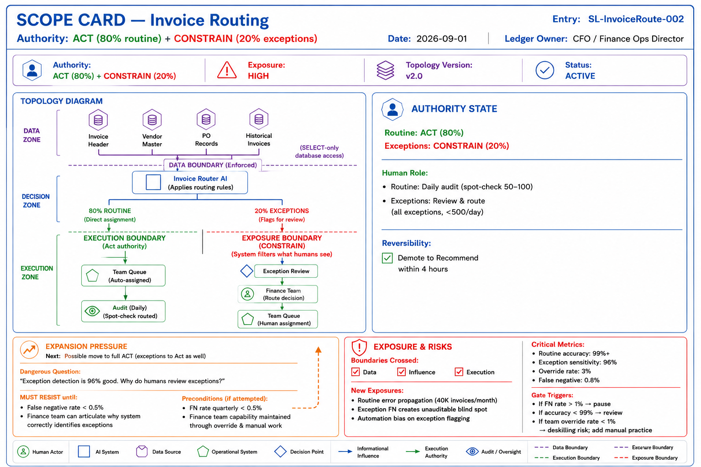
Visualizing the Progression
The visual progression shows how topology changes at expansion:
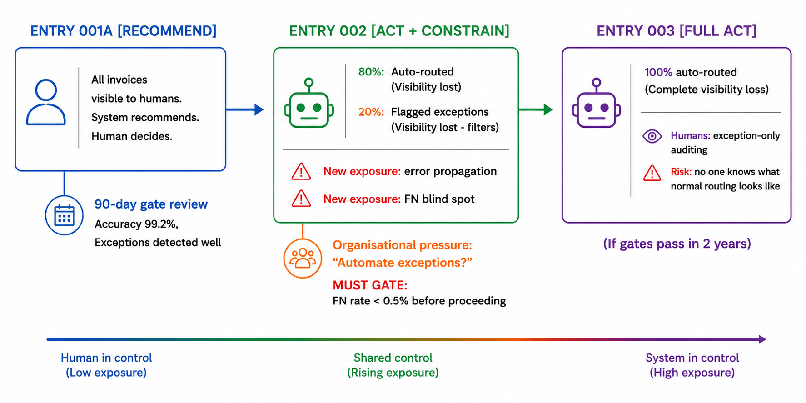
INTEGRATION WITH SCOPE LEDGER
The topology diagram and SCOPE Card are filed in the Scope Ledger as visual + textual records.
The Scope Ledger Entry for Entry 002 includes:
- Visual: SCOPE Card (topology diagram + summary info)
- Textual: Extended entry with detailed boundaries, exposures, gates, monitoring plan
- Governance: Approval signatures, review dates, monitoring cadence
The visual is primary. The text is supporting detail.
Summary: Visual-First Governance
Authority topologies are best understood visually, not through text.
- A practitioner looking at the Entry 001A diagram immediately understands: "All invoices visible; the system recommends, humans decide."
- A practitioner looking at the Entry 002 diagram sees right away: "80% are invisible (auto-routed); 20% are filtered (exceptions)."
- The shift from Entry 001A to Entry 002 shows visually how exposure increases.
The five-question conversation is how you create the diagram. The consistency checks ensure the diagram is clear. The SCOPE Card stores the diagram in the Ledger.
The diagram itself, the visual representation of authority allocation, is the key artifact.